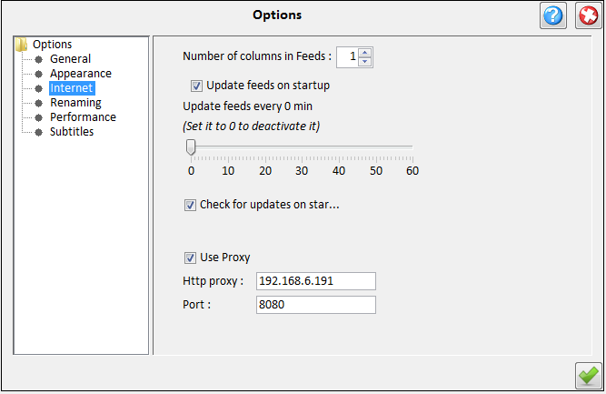

| Internet Options |
|---|
|  |
|---|
-
Update site -
You can choose the site from which you will get updates for your series episodes
when using [Internet Update].
This can be the EpGuides or the TvRage webpage.
-
Check for updates -
If the application should check for updates on start up.
-
Primary subtitles language -
Which language should be queried first when downloading subtitles.
-
Proxy settings -
If you are behind aproxy you can set the host and port by checking the Proxy
check box and provide the http host address and port in the textfields.
|